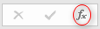
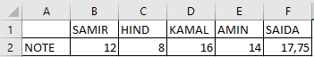
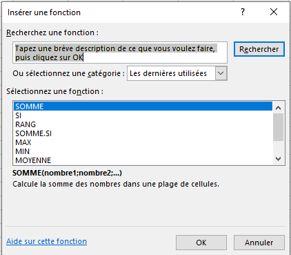
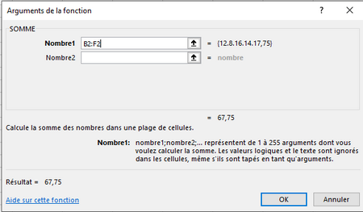
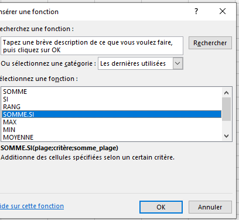
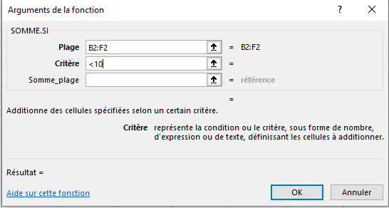
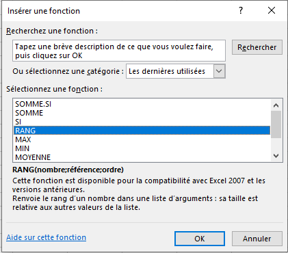
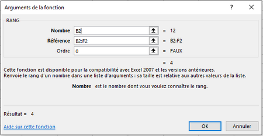
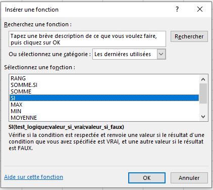
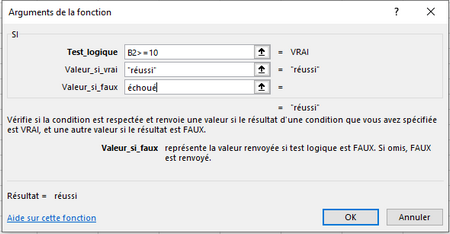

VI) Les fonctions
1. L'assistant fonction
✔ Cliquez sur la cellule dans laquelle vous voulez entrer la fonction. ✔ Cliquer sur:

✔ Entrez les arguments nécessaires puis appuyez sur Entrée.2. Catégories des fonctions
fonctions Math et trigo
| Fonction | Définition | Exemple |
|---|---|---|
SOMME |
Calcule la somme d'une série de valeurs. |
=SOMME (A1:A5) |
PRODUIT |
Calcule le produit d'une série de valeurs. |
=PRODUIT (A1:A5) |
SOMME.SI |
Calcule la somme d'une série de valeurs. |
=SOMME.SI (A1:A5; "<10") |
fonctions statistiques
| Fonction | Définition | Exemple |
|---|---|---|
MAX |
Renvoie la plus grande valeur. |
=MAX (A1:A5) |
MIN |
Renvoie la plus petite valeur. |
=MIN (A1:A5) |
MOYENNE |
Effectue la moyenne d'une série de valeurs. |
=MOYENNE (A1:A5) |
NB |
Calcule le nombre de cellules contenant des nombres. |
=NB(A1:A5) |
NB.SI |
Calcule le nombre de cellules contenant une valeur déterminée. |
=NB.SI (A1:A5; "<10") |
RANG |
Attribue un classement à une valeur en fonction d'une série de valeurs. |
=RANG (A1;A1: A5;0) |
fonctions Logique
| Fonction | Définition | Exemple |
|---|---|---|
SI |
Effectue des actions en fonction d'une condition. |
=SI (A1>=10; "Réussi"; "échoué") |
Exemple1: somme de données numériques
  
Remarque :
Même étapes pour les fonctions : produit, max, min, moyenne et Nb
Exemple2: la somme des cellules qui contiennent des valeurs inferieurs à 10
✔ sélectionnez la cellule dans laquelle vous souhaitez voir apparaître le résultat et Cliquer sur fx:
✔ Sélectionnez «SOMME.SI» et cliquez sur «OK»  
Remarque :
Même étapes pour la fonction NB.SI
Exemple3: Le Rang
✔ sélectionnez la cellule dans laquelle vous souhaitez voir apparaître le Rang et Cliquer sur fx:
✔ Sélectionnez «RANG» et cliquez sur «OK»  
Exemple4: La fonction SI
✔ sélectionnez la cellule dans laquelle vous souhaitez voir apparaître le résultat et Cliquer sur fx:
✔ Sélectionnez «SI» et cliquez sur «OK»  